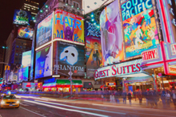
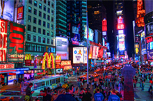
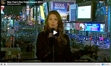

Carrefour du monde
Times Square ? Késako ?
Times Square est un quartier situé dans le borough de Manhattan, dans la ville de New York. Surnommée « la ville qui ne dort jamais », ce quartier est l’un des plus célèbres et animés du monde. Times Square est une icône de New York et représente à la perfection l’urbanisme de Manhattan. C’est un quartier en constante effervescence puisque le jour comme la nuit, l’animation bat son plein. Chaque jour, environ 365 000 personnes passent sur cette place.
Symbole d’une Amérique urbaine, colorée et lumineuse
Aujourd’hui, la place est un lieu touristique très réputé. Sur Times Square, on trouve une importante concentration de théâtres, de magasins, de restaurants et de lieux de divertissement. Les panneaux publicitaires, les écrans géants et les néons lumineux et multicolores se chevauchent. Cela traduit la démesure du lieu.
Au milieu de cette place, on se sent vraiment à New York, le New York mythique dont tout le monde parle. Times Square nous frappe et nous donne l'impression d'être dans un lieu gigantesque, presque surnaturel. De nuit, les sons, les images et les couleurs surprennent, amusent et donnent cette satisfaction d’être à Times Square, et nulle part ailleurs.
La magie de times Square
À travers la vidéo ci-dessous, on peut voir la grandeur et l’immensité du lieu. Il s’agit du streaming de la Saint Sylvestre lors du passage de l’année 2010 à l’année 2011. On y voit la foule venue du monde entier pour voir l’évènement le plus célèbre de l’année, célébré à Times Square. Cette vidéo illustre bien le fait que cet évènement est une légende. Times Square est toujours à la hauteur de nos espérances.
